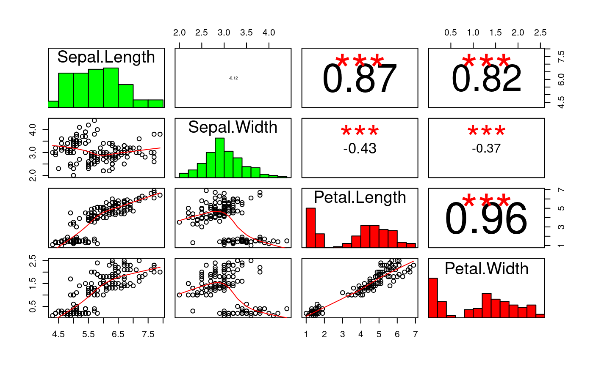
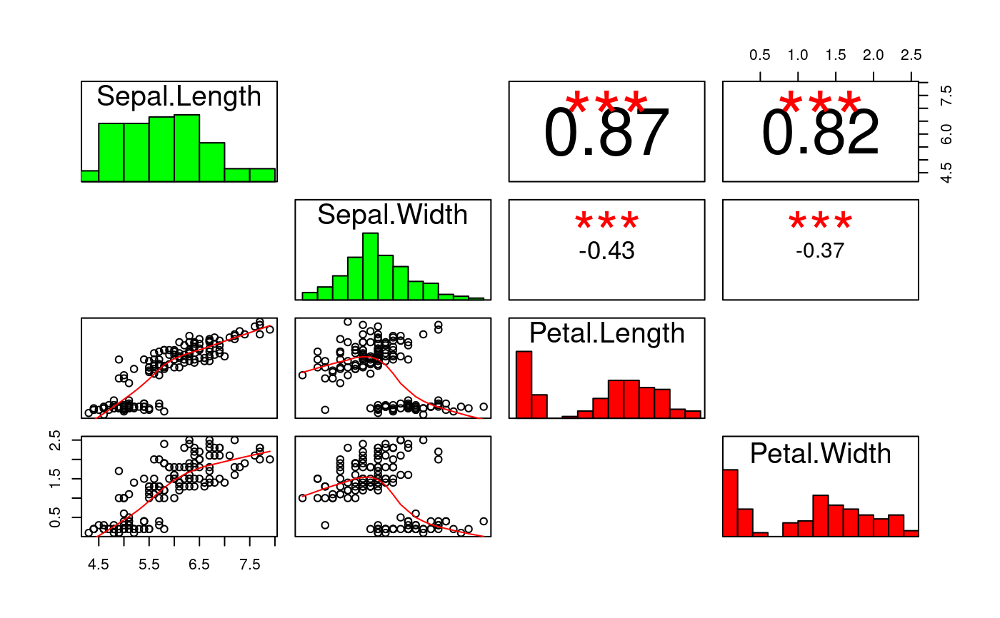

plotCor.RdplotCor creates a matrix of bivariate correlation plots between
all/selected pairs of variables in a data frame, similarly to
plot.data.frame. On the diagonal, there are histograms of
individual variables colored, by default,according to the estimated
normality of those variables. Below (or above) the diagonal, there
are scatter plots enriched by smoothed conditional estimates of the
mean. Above (or below) the diagonal, there are estimates of the
correlation coefficients and their significances shown.
plotCor is based on / inspired by several other similar plots.
I thank their authors, but, unfortunatelly, can't give credits to
them, as I can't remember all of them.
plotCor(x, method = c("pearson", "spearman", "spearmanExact", "glmPoisson", "lm"), adjust = FALSE, i1 = NULL, i2 = NULL, normalityColor = TRUE, aboveDiag = FALSE, silent = FALSE, plot = TRUE, ...)
| x | data frame |
|---|---|
| method | method used to compute the coefficient and the significance of the relation between each pair of variables. 'pearson', 'spearman', and 'spearmanExact' refer to correlation coefficients (the former two implemented in terms of 'stats::cor.test', the latter in terms of 'coin::spearman_test'). 'lm' refers to a linear model. 'glmPoisson' refers to a Poisson generalized linear model, i.e. 'stats::glm' with the Poisson family. |
| adjust | adjust p-values to the number of tests performed? If TRUE, approximate adjustment is used, correcting for the estimated effective number of tests performed, considering possible multicollinearity between variables. The effective number of tests is estimated as 'n ^ (1 - meanCorr)', where 'n' is the number of all bivariate tests performed and 'meanCor' is the mean absolute value of correlations between all pairs of variables considered. (For the purpose of this estimation, Pearson correlation is used when 'method' is set to 'pearson' or 'lm', and Spearman correlation is used otherwise.) If FALSE (the default), no adjustment is performed. If adjust='full' is used, adjustment to the full number of tests performed is employed. If 'adjust' is numeric, the number of tests performed is set to this value. If adjustment is requested, Bonferroni procedure is employed. |
| i1 | optional vector of indices or names of column of 'x' that form first elements of correlation pairs. By default, all columns are considered. |
| i2 | optional vector of indices or names of column of 'x' that form second elements of correlation pairs. By default, all columns are considered. |
| normalityColor | If TRUE, the diagonal histograms of individual variables get colored according to the estimated normality of the variables (normality in 'green', non-normality in 'red', indeterminate normality in 'gray'). |
| aboveDiag | If TRUE, scatter plots will appear above the diagonal and decorations below the diagonal. If FALSE (the default), scatter plots will appear below the diagonal and decorations above the diagonal. |
| silent | if TRUE, the number of tests compenstaing for gets displayed |
| plot | if TRUE, a plot is produced. |
| ... | further arguments passed on to 'pairs' |
the estimated effective number of the tests performed
# plotCor(iris[,1:4])#> adjusting to 1.00 tests#> adjusting to 1.00 tests# TODO: demonstrate more features